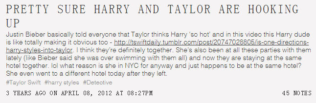
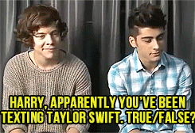
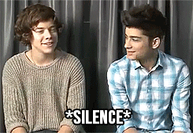
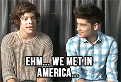
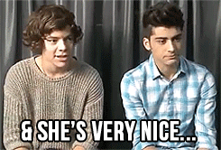
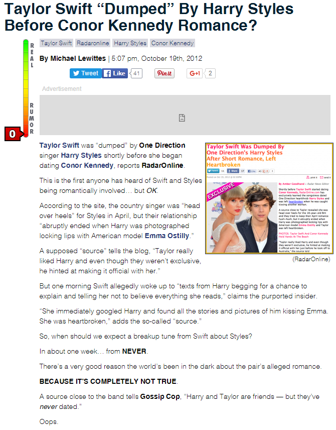

一. 越发奇怪 More and More Weird
1. 子虚乌有的地下恋情
在Haylor的时间线中，关于2012年4月的这个地下恋情是这么描述的：
2012年3月31号， TS和HS在儿童选择奖上初识；
接着Justin Bieber邀请TS和1D去他家参加Swimming Pool Party，并在之后告诉英国镜报TS觉得HS很hot；
4月7号，1D在纽约参加完SNL节目之后接受MTV News采访，HS被问到儿童选择奖上有没有哪个人让他觉得印象很深刻？HS提到了TS，1D其他成员调戏的大喊"Jackpot!"；
4月8号，TS被人目击出现在HS在纽约住的Bowery酒店；
4月17号，HS在澳洲接受采访时透露他和TS交换了电话号码，还说“我们在美国认识的，她非常有才华，她人特别好，我们是朋友”；
4月21号，HS在新西兰被拍到和美国模特Emma Ostilly吃晚餐，一路送女方回到住处，并在门口Kiss；
TS和HS一段短暂的“地下恋情”到此告一段落。
但是仔细看这段经过，发现事实并非如此。
2012年3月31号，TS带着Claire出席儿童选择奖（Kids' Choice Awards），KCA图集。颁奖礼上TS和Claire、Selena Gomez、Katy Perry坐在一起（图1）。虽然在KCA上第一夫人Michelle Obama为TS颁发了Big Help Award，TS还是没有去参加之后的after party，而是去Dianna Agron家参加Jessica Szohr的生日Party（图2）。照理说，TS如果对HS有意思她应该参加KCA的after party与HS更多接触才是。
{kind=link}
{kind=link}
4月1号，TS和Ashley飞去LV（拉斯维加斯）参加ACM（Academy of Country Music），ACM图集，并参加了之后的after party，party图集，并在第2天和家人朋友一起开了庆功宴，People撰文。直到4月4号依然在拉斯维加斯有目击；
4月1号-4号，HS继续待在LA（洛杉矶），4号晚从LA飞NY（纽约），到达LA机场图集；
4月5-8号，1D在纽约，7号晚参加SNL节目，SNL图集；
4月5-6号，TS没有目击，行踪不知；
4月7号，TS和DA、Emma Stone，可能还有Ashley，在纽约Otto餐厅吃饭，图1、图2；
{kind=link}
{kind=link}
因为收到1D要在Bowery酒店办party的风声，从6号开始就有1D粉守在纽约Bowery酒店门口等候1D，并在推特上直播了她们的守候过程，图1、图2、图3、图4、图5（5张推特截图，全部从下往上看）。从推特内容上看，博主是大大的1D粉，6号一无所获，在7号先遇到了DA并合影，后来陆续目击其他名人，在8号目击TS在Bowery酒店休息厅和DA聊天，然后离开，后来博主还贴了与TS的合影。还有JB粉也目击到TS和DA在一起，图6。直到8号结束，1D粉都没等到1D，也就是1D既不住在也没出现在Bowery酒店；
{kind=link}
{kind=link}
{kind=link}
{kind=link}
{kind=link}
{kind=link}
4月9号一早，1D离开NY去澳大利亚；
自此之后，直到9月份，TS和HS都没有再处于同一地区过，更不要说见面了。
这里问题就来了，3月31号第一次见面，到4月9号1D飞澳洲，中间扳起指头数也就9天，其中4月1-4号，他们一个在拉斯维加斯一个在洛杉矶，只有7号8号是确定都在纽约的。他们难道谈了一场为期2天的地下恋情……
这个过程中有些真真假假的传言需要梳理一下
传言一：据Justin Bieber所说，TS觉得HS很hot，他们还一起在JB家游泳。
这纯粹是误传，来看4月5号的镜报原文
JB的原话是
Bieber reveals:"I already know one of the biggest artists in the world thinks Harry is so hot, but I have been sworn to secrecy."
某个大明星觉得Harry is so hot，这个artist是男是女是老是少是歌手是演员都不知道呢，怎么就能扯到Taylor Swift身上去了。（这原文里还在猜是Madonna、Katy Perry和Rihanna呢）
更离奇的是还有人编出“JB某天邀请TS和1D到他家开swimming pool party，他们在一个游泳池游泳”的情节，不得不说脑洞太大。
对照上面TS的行程，TS在KCA遇到HS，当晚她去DA家参加DA好朋友Jessica Szohr的生日party，第2天就去LV参加ACM，直到4号还在拉斯维加斯，即使JB真的请1D和某个大明星去他在洛杉矶的家开party，某个大明星觉得HS很hot，这个大明星也不可能是Taylor Swift，同一时间，他们在两个不同的城市。
Justin的确是在LA参加了swimming pool party，还和Selena有kiss照，但1D并不在场，TS更远在拉斯维加斯。
传言二：HS在接受MTV News采访时说对TS印象深刻
1D被主持人问到对KCA上女歌手们的评价以及觉得谁比较受欢迎，Liam先说Katy Perry，然后将皮球扔给HS，HS先说大家都挺好的，Louis逼问他any particular people？HS说I don't know，后来说Perry，Louis和其他人继续逼问any more？直到他说出Taylor Swift，其他人纷纷表示that's the one，Louis说Jackpot。
1D被问到想和谁合作，1D其他成员先说Katy Perry，Rihanna，接着Louis问HS any particular people？ HS还是说I don't know，然后呃嗯啊了半天，最后Louis说出了Taylor Swift，然后Zayn说that's the one，Jackpot。
可以看出1D成员在这个采访中刻意让HS说出"Taylor Swift"，并在两个问题（哪个女歌手比较受欢迎和想与哪个女歌手合作）中默认"Taylor Swift"是标准答案，"that's the one"，"Jackpot"。
可能一：HS的确喜欢TS，其他成员想借此机会调侃他
可能二：1D团队被安排炒作HS与TS的绯闻
无论是哪种可能，1D都逃不掉故意爆料炒作的嫌疑
传言三：TS和HS一起住在纽约Bowery酒店，当9号1D离开后TS又换了一家酒店住
{kind=link}
上图是TS粉丝所想，先有JB的"TS thinks" HS so hot，后有MTV News中“HS说”TS很特别，还有传说中“在JB家一起游泳”，现在没有工作任务不知道出于什么原因跑去纽约的TS和HS住在了一个酒店，1D走了之后她又换了个酒店，很明显他们是在约会。
前面已经澄清过，1D并没有去过/住在Bowery酒店，1D粉从6号守到8号都没见到半个1D人影，她们目击了TS在Bowery酒店和DA谈笑后离开，并说TS也不住在Bowery酒店。所谓TS在1D离开后又换了个酒店住，那是TS从一开始就住在别的酒店。
{kind=link}
传言四：HS说他和TS交换了电话号码
   主持人问："Harry, apparently you've been texting Taylor Swift. True or False?"
HS 沉默，然后说："Ehm... We met in America. She is very talented. She's very nice... We're friends"
主持人套他的话，他没有承认，只是说了几句场面上的客套话，夸了TS几句罢了。
总结起来就是：
从3月31号KCA到4月9号1D离开美国，TS和HS只有3月31号、4月7、8号处于同一城市，在这3天他们没有任何在一起的目击，没有任何合影。之后直到12年9月之前都再没同城过
媒体和粉丝根据JB说的one of the biggest artists thinks Harry is so hot，猜想这个artist是Taylor Swift
TS没有提及、没有被问及Harry Styles或1D
1D主动提及、被问及Taylor Swift
这段2012年4月的“地下恋情”，看起来更像1D单方面的炒作绯闻。
2012年10月19号，Gossip Cop 0分辟谣否认TS在Conor Kennedy之前曾和HS有一段恋情。
{kind=link}
According to the site, the country singer was "head over heels" for Styles in April, but their relationship "abruptly ended when Harry was photographed locking lips with American model Emma Ostilly"
根据RadarOnline的报道，这位乡村歌手曾在（12年）4月为HS“神魂颠倒”，然而他们的关系却因为HS嘴对嘴的亲吻美国模特Emma Ostilly的照片曝光戛然而止。
In about one week ... from NEVER
在大约一周之内（3.31-4.9）... 绝无可能
IT'S COMPLETELY NOT TRUE
这完全是鬼扯
"Harry and Taylor are friends —— but they've never dated"
“Harry和Taylor是朋友 —— 但他们之前从未约会过”
也就是说，所谓TS和HS在2012年上半年有一段地下恋情，后来因为HS出轨而告吹根本就是子虚乌有的故事。
既然两个人没有在一起过，那2012年6月初完成了最后录制工作、10月22号发行的四专RED，就和Harry Styles没有一点关系。不管之后TS怎么暗示，媒体怎么传，I Knew You Were Trouble都不可能是写HS。
更何况在RED track by track的视频中（2分10秒），TS说了IKYWT的灵感来自于她和Max Martin开始写这首歌的半年前她的一个梦，6月初TS已经完成了四专所有录制，获得灵感并且打电话告诉Max最晚也是11年的事了。
另外在一则早期的swift fact中提到，IKYWT和WANEGBT写于同一天，仔细看RED track by track，TS说的是"almost 6 months before I was scheduled to write with Max Martin"，她和历届制作人集中安排时间写歌录歌基本都是年底年初之时，WANEGBT据TS说（4分48秒）是和Max Martin在Studio录音室中创作的时候一个ex的朋友进来了，问她是不是要和ex复合，她吐槽we are never ever getting back together之后，Max Martin建议写成一首歌的。虽然我不知道WANEGBT的具体完成时间，从上面描述看，我倾向于在年底或年初的巡演冬歇之时，最起码绝对不会是在12年4月这么晚。那么意味着，在和Max Martin动手开始写的半年前就有了灵感的IKYWT，100%是在11年。
{kind=link}
这个时候TS压根就没见过HS，IKYWT和HS无关。
既然与HS无关，TS为什么又要暗示这是写HS的，这背后的深层次原因放在后面再说。